Taylor Arnold and Lauren Tilton, Distant Viewing (MIT Press, 2023), Ch. 1, “Distant Viewing: Theory”
Sarah Kenderdine, Lily Hibberd and Jeffrey Shaw, “Radical Intangibles: Materializing the Ephemeral,” Museum & Society 19, no. 2 (2021)
Two jobs, often confused
Preservation
Keep a record of the thing: a scan, a 3D model, a recording. The aim is fidelity: the record should survive the original and be as complete and accurate as possible.
Question to ask: is the copy faithful?
Interpretation
Help a person understand why the thing matters. The aim is meaning: a visitor who leaves with a question, a connection, a changed view.
Question to ask: does anyone understand more?
Digital projects often claim both. Much of today’s critique comes from mixing them up:
a perfect laser scan can be uninterpretable to a visitor;
a vivid virtual world can be unfaithful to the evidence, and nobody can tell which parts are invented.
For discussion: what in Hong Kong’s heritage is tangible, and what is intangible? Which of the two can a scanner record?
Tangible
Things that can be touched, kept and scanned: buildings, objects, documents, paintings. A tenement house, a temple bell, a Qing map.
Intangible
Practices that exist only while people perform and pass them on: skills, rituals, festivals, music, oral traditions. Kung fu, Cantonese opera, the Cheung Chau Bun Festival.
Freeman Tilden: interpretation
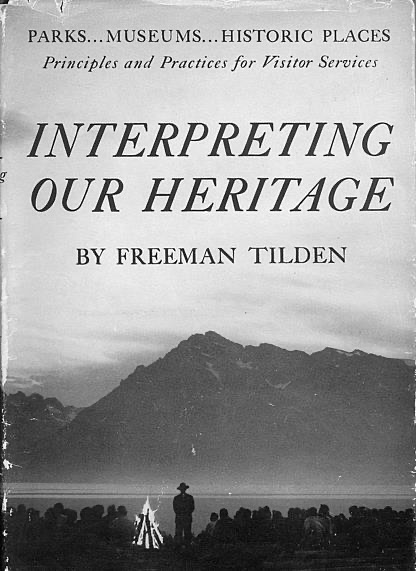
Written in 1957 for the US National Park Service; still the founding text of heritage interpretation.
An educational activity which aims to reveal meanings and relationships through the use of original objects, by firsthand experience, and by illustrative media, rather than simply to communicate factual information.Tilden, Ch. 1, p. 8: his definition “for the dictionary”
Interpretation is the revelation of a larger truth that lies behind any statement of fact.p. 8: the same idea, “for the interpreter”
Here he meets the Thing Itself … “To pay a personal visit to a historic shrine is to receive a concept such as no book can supply.”p. 3, on the visitor to a park, site or museum
Tilden’s six principles
I
Any interpretation that does not somehow relate what is being displayed or described to something within the personality or experience of the visitor will be sterile.
II
Information, as such, is not Interpretation. Interpretation is revelation based upon information. But they are entirely different things. However, all interpretation includes information.
III
Interpretation is an art, which combines many arts, whether the materials presented are scientific, historical or architectural. Any art is in some degree teachable.
IV
The chief aim of Interpretation is not instruction, but provocation.
V
Interpretation should aim to present a whole rather than a part, and must address itself to the whole man rather than any phase.
VI
Interpretation addressed to children (say, up to the age of twelve) should not be a dilution of the presentation to adults, but should follow a fundamentally different approach.
A database, a search portal or a 3D model is information (principle II). What turns it into interpretation? Tilden’s answer is principle IV.
Not instruction, but provocation
Tilden’s favourite museum label (Witte Museum, San Antonio) told visitors that mammoths once “browsed right where you are standing now” (Ch. 2).
The provocation to the visitor to search out meanings for himself, and join in the expedition like a fellow discoverer, was sometimes submerged in a high tide of facts, perfectly accurate, perfectly ineffectual.Tilden, Ch. 5, “Not Instruction But Provocation,” p. 36
A ranger explains how, over centuries, rock becomes soil, grass and forest. Then, with a snap of the fingers: “And with a lighted cigarette you can destroy it all—LIKE THAT!” … Not all the warning signs about fires ever put on the roadsides; not all the statistics ever published … could have had the effect … It was not instruction. It was provocation.pp. 38–39
“Through interpretation, understanding; through understanding, appreciation; through appreciation, protection.” National Park Service manual, quoted by Tilden, p. 38
Try it: information vs. provocation
A label that informs
Mammoth (Mammuthus). Pleistocene epoch. Skeleton excavated in Texas. Height at shoulder 3.4 m.
The label Tilden admired
“Prehistoric mammoths were here in Texas just a few thousand years ago. They roamed the plains in great herds… . The chances are that they browsed right where you are standing now.”
The second label connects to the visitor’s own place (principle I) and leaves a question behind (principle IV).
It contains less information. Interpretation includes information but is not reducible to it.
Your turn (5 min): pick one object from the online collection of the Hong Kong Heritage Museum or the Hong Kong Palace Museum. Write two labels of 30 words each: one that informs, one that provokes. We will read a few aloud.
Then ask the same of a digital project: does the 3D model, VR cave or online database provoke, or does it only add to the “high tide of facts”?
Tilden on technology: “Of Gadgetry”
A gadget of our time: online 3D models of Ayutthaya, Thailand. Tilden’s gadgets were slide projectors, tape recorders and push-button displays.
There will never be a device of telecommunication as satisfactory as the direct contact not merely with the voice, but with the hand, the eye, the casual and meaningful ad lib … While I think nobody disagrees upon this, we all know that there will not be enough of those individuals to make the direct contact.Tilden, Ch. 13, p. 95
Such a mechanical device can never deliver anything better than what some person thought, prepared, spoke or otherwise personally performed.p. 96
Tilden’s six reflections on gadgets
1
No device is as desirable as interpretation by direct contact with the person.
2
A good device is far better than no contact at all.
3
A good result by device is better than a poor performance by an individual.
4
A poor interpretation by machine is worse than a poor one by a person.
5
A poor device may be worse than none at all.
6
Install nothing that cannot be serviced quickly and continually.
Gadgets do not supplant the personal contact; we accept them as valuable alternatives and supplements.Tilden, p. 97
Reflection 6 today: broken links, dead plug-ins, abandoned apps, unsupported VR headsets. Who maintains a digital exhibit in ten years?
Your turn: think of the last digital display you used in a museum. Which of the six does it pass?
The Mogao Grottoes near Dunhuang, Gansu: Buddhist cave temples cut between the 4th and 14th centuries, about 500 of them painted. A UNESCO World Heritage Site since 1987.
The cave
Cave 45 is a High Tang cave (8th century), known for its painted clay sculptures of the Buddha with disciples, bodhisattvas and heavenly kings.
The problem
Breath, humidity and light damage the murals. Visitor numbers are capped, and many caves are closed to the public.
The surrogate
For its 2016 exhibition Cave Temples of Dunhuang in Los Angeles, the Getty showed full-size replica caves and this virtual walk-through of Cave 45, made with the Dunhuang Academy.
Does the copy replace the Thing Itself?
The virtual Cave 45: a beam of light picks out details on the wall, in the order the designers chose.
The decoupling of the original from its copy and its integration into networked culture has created new avenues for the lives of bodies as virtual (if not actual) museum artefacts, where the sense of presence, or its thingness takes precedence over the thing itself.Kenderdine, Hibberd and Shaw 2021, p. 255
Against Tilden? Tilden’s visitor meets “the Thing Itself.” Here the experience of presence is produced without the thing. But the cave was built for worship, not for a camera path, and the designers choose the lighting, scale and order of looking.
With Tilden: for a cave that cannot take visitors, the real comparison is his second reflection, “a good device is far better than no contact at all.”
Case: reconstructing Sanxingdui
“3D Revivification of newly unearthed relics from Sanxingdui 三星堆新出土文物3D复原” (Sanxingdui-Jinsha channel). youtube.com/watch?v=52sVaUjlbR0
The site
Sanxingdui 三星堆, Guanghan, Sichuan: a Bronze Age culture of about 3,000 years ago with no known writing. Two sacrificial pits were found in 1986; six more were excavated from 2020.
The objects
Bronze masks and heads, gold foil, jade, ivory. Many were deliberately broken and burned before burial, so they come out of the ground as fragments.
The video
Scanned fragments are joined, completed and re-coloured into whole, gleaming objects, ending in a gold mask “restored” to its imagined place.
The objects were broken on purpose. Making them whole again shows their original form, but it hides the ritual act of breaking them, which is itself evidence. Should a reconstruction show the object as it was made, or as it was buried?
Critiquing a reconstruction: five questions
1
Evidence or conjecture?Can you tell the scanned parts from the inferred ones? Is uncertainty shown (colour, transparency, a note), or is everything rendered with the same confidence?
2
Are the decisions documented?Sources, alternatives rejected, who decided. The London Charter (2009) calls this documentation paradata.
3
Which moment, and whose past?An object has many states: made, used, broken, buried, excavated. Choosing “the original” is choosing a story, often a national one.
4
What is left out?Sound, smell, use, dirt, crowds, the people who made and used it.
5
What does it ask the visitor to do?Look, play, buy, or think? Tilden: provoke, do not only display.
A reconstruction is an argument about the past, presented as an image, and images do not footnote themselves. The same is true of historians’ maps, networks and charts.
Heritage that does not stay still
Intangible cultural heritage (ICH): practices, performances, skills and knowledge kept alive by communities “with a sense of identity and continuity.”
UNESCO Convention for the Safeguarding of the Intangible Cultural Heritage (2003); China ratified it in 2004.
Intangible cultural heritage
Reenactment
Status
a living practice, transmitted without a break
a practice that was discontinued and must be recreated
Example
Hong Kong kung fu, taught master to student
Confucian rites of the Yili, broken in the 20th century
Authority
the community of practitioners
texts, archaeology, and the scholars who read them
Critiques: UNESCO lists can become an “authorized heritage discourse” (Laurajane Smith, 2006); in China, ICH policy can serve national narratives (Chen 2015; Wu 2012). Popular reenactment has been criticized for upholding nationalist and colonial stories.
Kenderdine, Hibberd and Shaw 2021, §1.1.
“Radical intangibles”
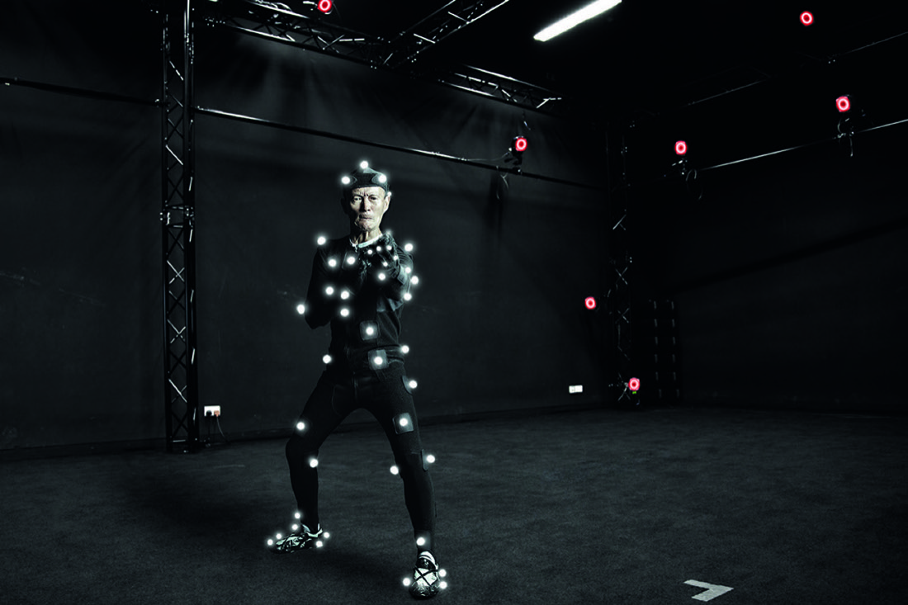
A kung fu master in a motion capture studio: infrared cameras track reflective markers on the body (Fig. 1).
What were once considered practices beyond representation or recording, the intangible realms of experience inherent to bodies (as they are conjoined with minds) are being transformed through computational processes into what we call ‘radical intangibles’.Kenderdine, Hibberd and Shaw 2021, p. 252
Their method, “computational museology,” links three steps: data capture (motion capture, video, photogrammetry) → modelling (3D bodies moving over time) → algorithmic reenactment (interactive archives that can be replayed and reperformed).
Case: Hong Kong Martial Arts Living Archive
Why
Many southern Chinese masters moved to Hong Kong, many during the Cultural Revolution; today they are ageing. Kung fu passes from master to student over years, and “embodied practices cannot be learned from a book” (p. 258).
Who
Started in 2012 by the International Guoshu Association and City University of Hong Kong; later also EPFL’s Laboratory for Experimental Museology.
What
19 styles performed by 33 elite practitioners, recorded with motion capture, 3D reconstruction and panoramic video: by the authors’ account, the largest motion archive of its kind.
Where you could see it
300 Years of Hakka Kung Fu, Hong Kong Heritage Museum, Sha Tin, 2016. Two installations: Re-Actor and Kung Fu Pose Matching.
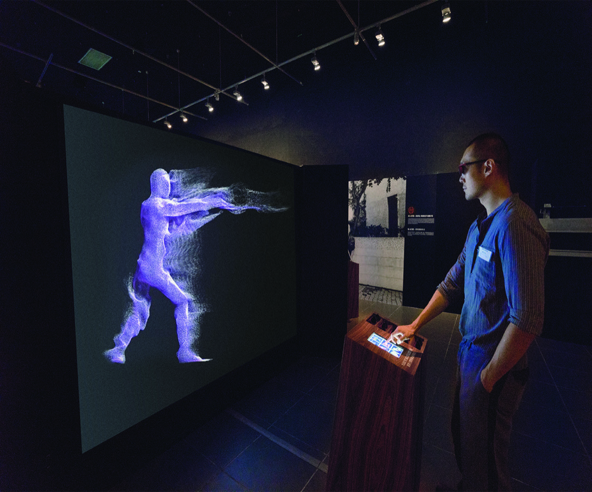
Re-Actor at the Hong Kong Heritage Museum, 2016 (Fig. 2): a six-sided structure, five metres across. Each side shows one master’s taolu 套路 (set routine) in stereoscopic 3D; a joystick switches between six visualizations.
Making the invisible visible
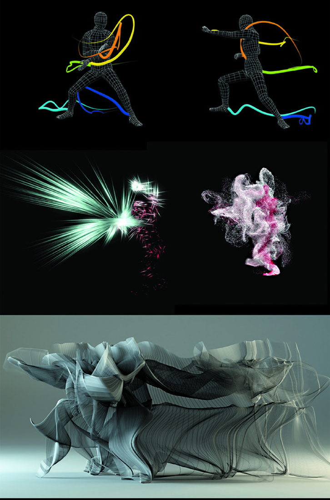
Kung fu annotation and visualizations, 2016 (Fig. 3).
Through colour and motion graphics, these six forms of documentation dynamically visualize the aesthetics and spatial-temporal dimensions underlying the movements of kung fu masters … They reveal the depth and array of intricate dynamics in the HKMALA repertoire; aspects of kung fu motion usually indiscernible to amateurs.Kenderdine, Hibberd and Shaw 2021, p. 259
The authors call this “aesthetic transcription” and place it in a long line: Chinese martial-arts manuals, the ritual scripts of the Yili, and Labanotation for dance. In Tilden’s terms it aims at revelation, not only information: it shows what the eye alone misses.
Can a body learn from a database?
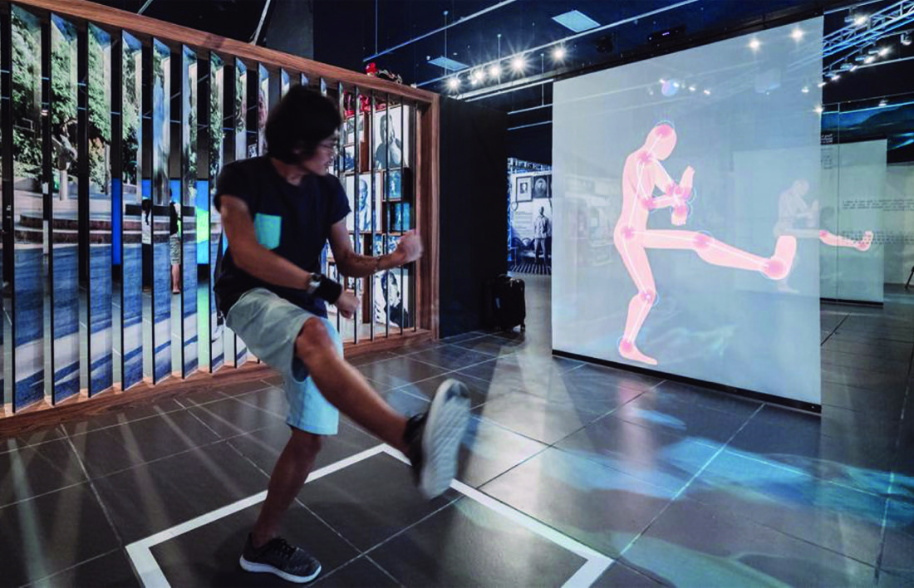
Kung Fu Pose Matching, Hong Kong Heritage Museum, 2016 (Fig. 4). Sensors detect when the visitor’s pose matches the master’s; the screen flashes, as in a video game. A 2018 EPFL/UNIL study found some improvement with repetition.
There is no guarantee that a novice engaged in copying the kung fu master’s movements will either comprehend, access, or acquire the tacit expertise they are replicating.Kenderdine, Hibberd and Shaw 2021, p. 261
One master quoted in the article says kung fu requires “at least ten years of strict commitment” (p. 258).
Tilden’s test: is the installation transmission, or a good provocation that might send a visitor to a real teacher? Which of his six reflections does it pass?
Case: Remaking Confucian Rites
The text
The Yili 儀禮 (Book of Etiquette and Rites), a canonical description of 17 rites that the authors call a “performance manual” for ritual conduct (li 禮).
The break
The practice of these rites broke down after 1911 and in the Cultural Revolution. Nobody performs them from living memory, so this is reenactment, not living ICH.
The project
Led by Peng Lin 彭林 at Tsinghua University, with City University of Hong Kong and EPFL. A script was written from close reading of the text, philology and archaeology, with replica props and costumes.
The shoot
The provincial archery rite 鄉射禮: a near full-scale temple set in a Beijing studio, 30 Beijing Opera actors, about 8 hours of cinema-quality film, plus motion capture and 360° video. The footage is annotated in a database.
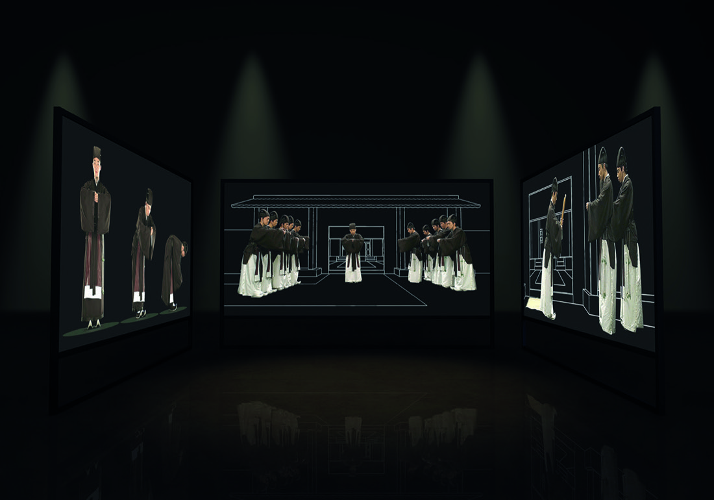
Three-screen installation of the capping ceremony, Ljubljana, 2016 (Fig. 5).
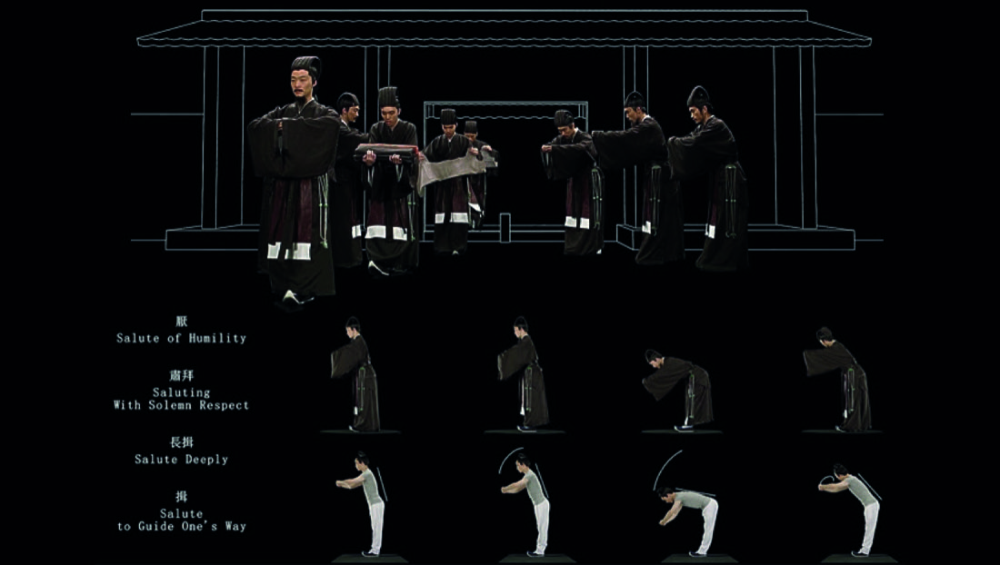
Multimodal recordings and annotation (Fig. 6).
Reenactment as historical method?
“Deep Time Machine II: Jeffrey Shaw’s Screening of Konfuzius Rites,” Potential Spaces, ZKM / HfG Karlsruhe, 2017 (cited in the article, n. 15). youtube.com/watch?v=ry2leciY58Q
Digitally augmented in this way, scholarly reenactment generates ontologically intense knowledge because its liveness as well as more abstract ritual qualities can be contextualized in a wholly live and yet remakeable encoded world.Kenderdine, Hibberd and Shaw 2021, p. 263
The archive records opera actors performing a scholarly reading of an ancient text. What exactly is being preserved?
The strongest claim: the team uses the recordings to test hypotheses drawn from the text, like experimental archaeology.
Images make meaning differently from text
Fig. 1.1: a Winslow Homer watercolour (Nassau, 1898) and a photograph (Hayman Island, 2019). Different materials, a century apart, and both say “palm trees, wind, sea.”
As Roland Barthes argues, there is a “special status of the photographic image: it is a message without a code.” In photography, it is not necessary to construct an explicit mapping between the visual representation and what is being represented.Arnold and Tilton 2023, p. 14
A word like pencil refers by convention, so texts can be split into words and counted. An image refers by resemblance: people who share no language can recognize what it shows. Paul Valéry: seeing is “looking, in other words forgetting the name of the things that one sees.”
Encoded is not decoded
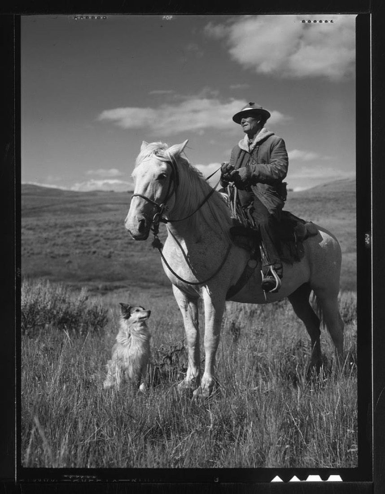
Fig. 1.2: Russell Lee, “Shepherd with his horse and dog on Gravelly Range, Madison County, Montana,” 1942. Farm Security Administration / Office of War Information collection, Library of Congress.
The photographer may have taken the photograph … to convey loyalty. Whether the viewer decodes that message is not necessarily a given … A viewer from a different position may interpret the image as about the man’s dominance of the landscape.Arnold and Tilton 2023, p. 15
The messages that are encoded may not be decoded, and messages that were not intentionally encoded may be decoded.p. 15, following Stuart Hall
This is true of every viewer: you, your classmates, a museum visitor, and a computer-vision model.
What the computer has: numbers
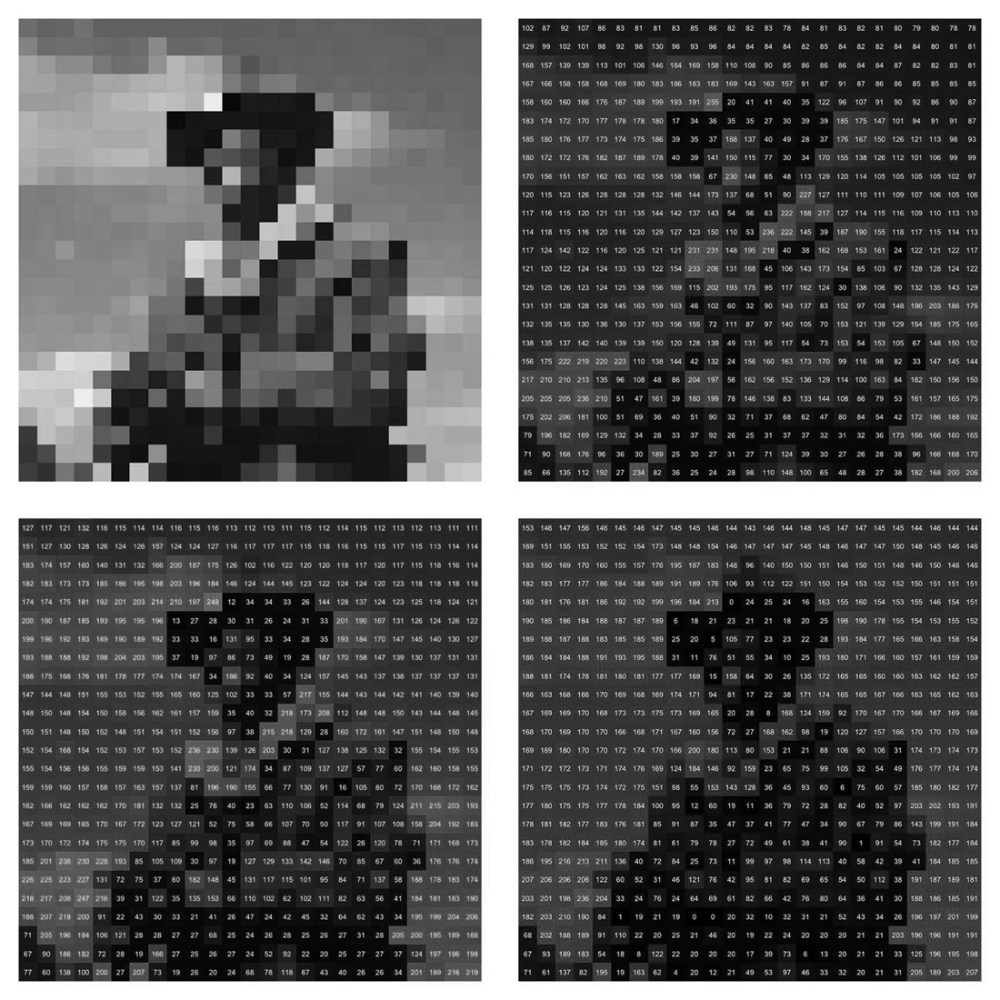
Fig. 1.3: each pixel is three numbers, red, green and blue, from 0 to 255.
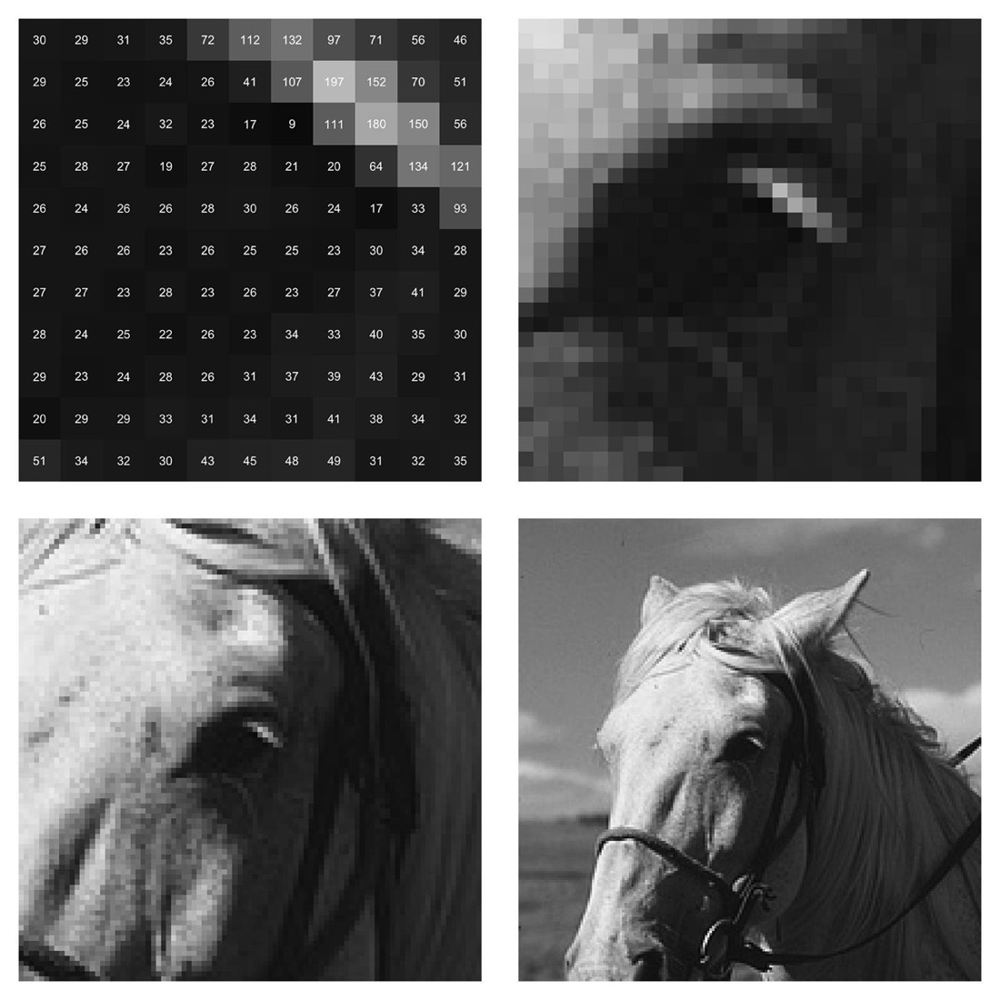
Fig. 1.4: four zoom levels on the horse’s left eye. Up close, the same pixels are just grey squares.
We recognize the eye only in context: next to ears, nose, neck.
There is a “substantial gap” between the numeric representation and what one sees (p. 19).
Text compression must be reversible. Images survive lossy compression and resizing: more evidence that images have no discrete code.
Compare OCR (Week 6): there the gap was crossed by recognizing characters, a code. Most images have no such code to recover.
Why images must be viewed first
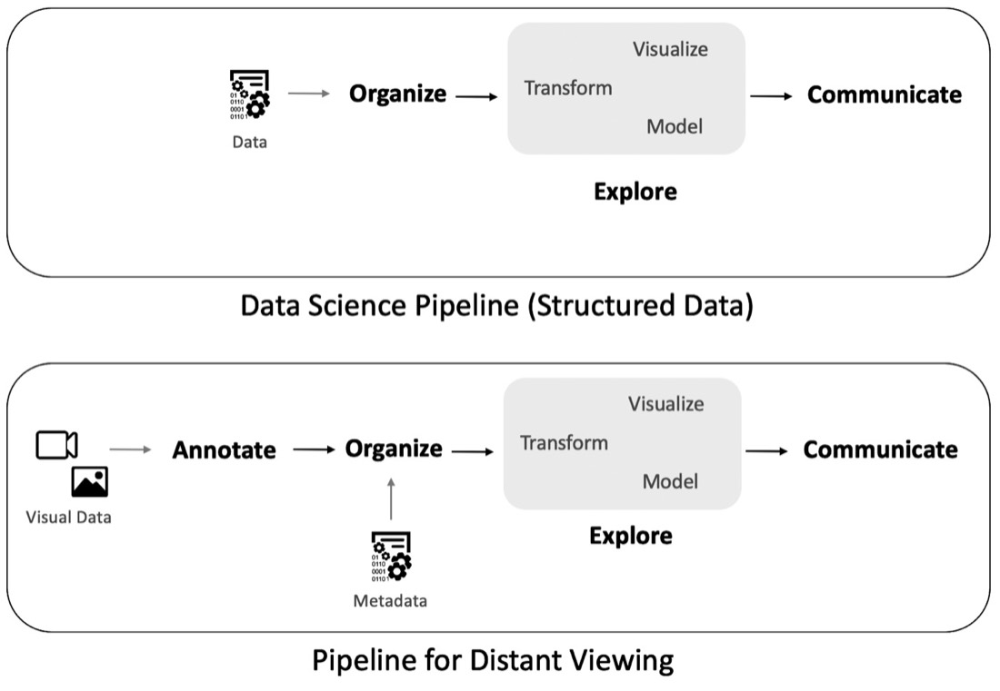
Fig. 2.1: a data-science pipeline (top) and distant viewing (bottom), which adds Annotate before everything else.
There is no equivalent way of grouping together and counting raw pixel values in the way that we were able to do by grouping letters into words … In other words, the images must first be viewed. There is no equivalent option, as there is with structured and textual data, to delay interpretation.Arnold and Tilton 2023, pp. 22–23
Recall Week 7: a topic model counts words first; we name the topic (“weather”) only at the end. With images, the annotation (a count of people, an object label, a caption, a colour profile) comes first, and it is already an interpretation.
Whose eyes does computer vision have?
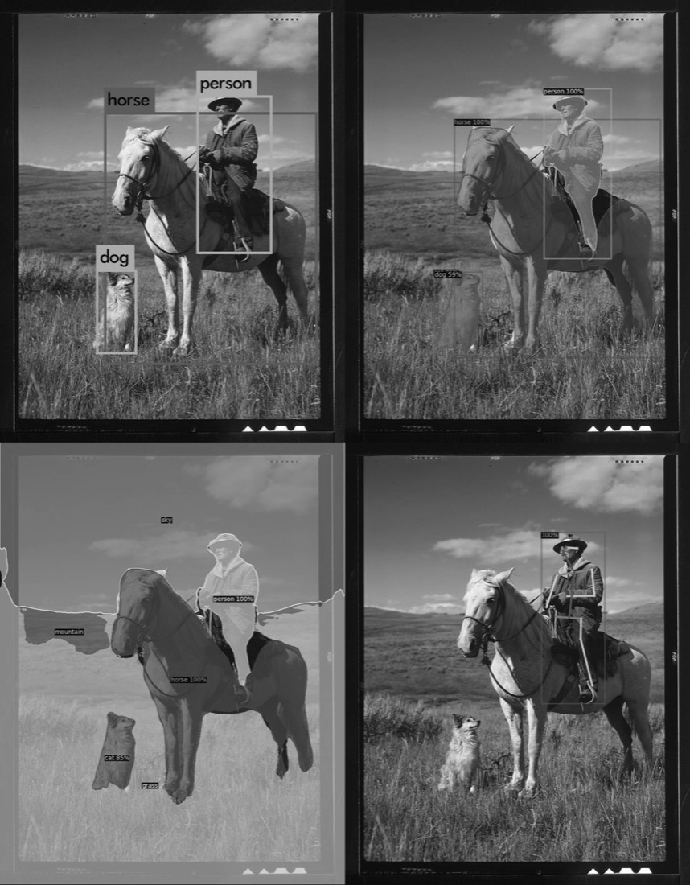
Fig. 2.2: object boxes, region masks, panoptic regions and body keypoints, all on the same photograph.
Applications to support the military and surveillance state have motived many of the most studied and accessible computer vision methods, such as face detection and object-tracking. Applying these methods is never culturally neutral.Arnold and Tilton 2023, p. 11
Task works well
because it was funded for
handwritten digits
sorting mail by postcode
faces
surveillance
cars, people, stop lights
self-driving cars
Concrete tasks (photo orientation, objects) are easier; culturally mediated ones (emotion, style, “dignity”) are much harder (p. 25). A pedestrian detector will find “pedestrians” in a Song dynasty scroll: its categories are not ours.
“Distant” and “viewing”
Fig. 2.3: Dorothea Lange, Nipomo, California, 1936. The iconic Migrant Mother (left) and another view of the same scene (right). The photographer’s choice of frame is already a way of viewing.
As John Berger argued … “an image became a record of how X had seen Y.”Arnold and Tilton 2023, p. 29
Rather than focusing on whether a computer vision algorithm can be objective, we focus on defining which ways of viewing are encoded and decoded, and assessing the possibilities, limitations, and effects of these decisions.p. 30
Distant: away from the eye (the computer calculates) and at a scale beyond memory. Viewing: seeing is passive, but looking is intentional and learned, so it is shaped by culture.
Two ways to annotate an image
By hand (e.g. in IMMARKUS)
By computer vision
Who looks
you, with your training as a historian
a model, with the “training” of its data
Categories
your own, fitted to your question (seal, inscription, official’s rank)
the model’s (person, horse, umbrella)
Scale
dozens of images
millions
Errors
inconsistency, fatigue, your own bias
systematic bias, confident mistakes
Output
regions + tags + notes, linked to the image
boxes, labels, scores, embeddings
Both are viewing in Arnold and Tilton’s sense. Manual annotation is how we check machine annotation, and how we build the categories it lacks.
Recap
1
Not instruction, but provocation. A faithful copy is information; interpretation reveals and provokes (Tilden).
2
Gadgets supplement, never replace, the person, and must be maintained.
3
Reconstructions are arguments: ask for the evidence, the decisions and the uncertainty.
4
Radical intangibles: bodies and rituals turned into data that can be reperformed (Hong Kong kung fu, Confucian rites).
5
Distant viewing: images must be annotated before analysis, and annotation is already interpretation.
6
Every annotation is a way of viewing: by hand or by machine, name your categories.
Sources
Freeman Tilden, Interpreting Our Heritage, 3rd ed. (Chapel Hill: University of North Carolina Press, 1977 [1957]). Ch. 1, “Principles of Interpretation”; Ch. 2, “The Visitor’s First Interest”; Ch. 5, “Not Instruction But Provocation”; Ch. 13, “Of Gadgetry.”
Taylor Arnold and Lauren Tilton, Distant Viewing: Computational Exploration of Digital Images (Cambridge, MA: MIT Press, 2023), open access. Ch. 1; Figs. 1.1–1.4, 2.1–2.3.
Sarah Kenderdine, Lily Hibberd and Jeffrey Shaw, “Radical Intangibles: Materializing the Ephemeral,” Museum & Society 19, no. 2 (2021): 252–272. Figs. 1–6.
Videos: Getty Research Institute (Mogao Cave 45); Sanxingdui-Jinsha; HfG Karlsruhe / ZKM (Potential Spaces, 2017). Links on each slide.
Further reading: Fiona Cameron and Sarah Kenderdine, eds., Theorizing Digital Cultural Heritage (MIT Press, 2007); The London Charter for the Computer-Based Visualisation of Cultural Heritage (2009); Laurajane Smith, Uses of Heritage (Routledge, 2006).
Lab (if time allows): annotating with IMMARKUS
1 Open an imagea IIIF image of an East Asian historical source
→
2 Draw regionsa figure, a seal, an inscription, a building
→
3 Describetags, notes, links to people and places
→
4 ExportCSV (a table) and JSON-LD (W3C Web Annotation)
Keep the theory in mind
Decide your categories before you start, and write them down. That is your “way of viewing.”
What did you not annotate, and why?
Could a computer-vision model produce your tags? Which ones, and which never?